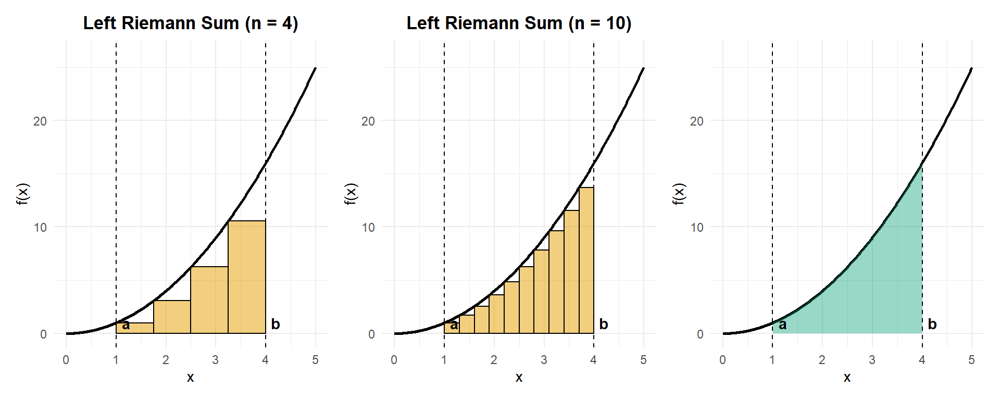
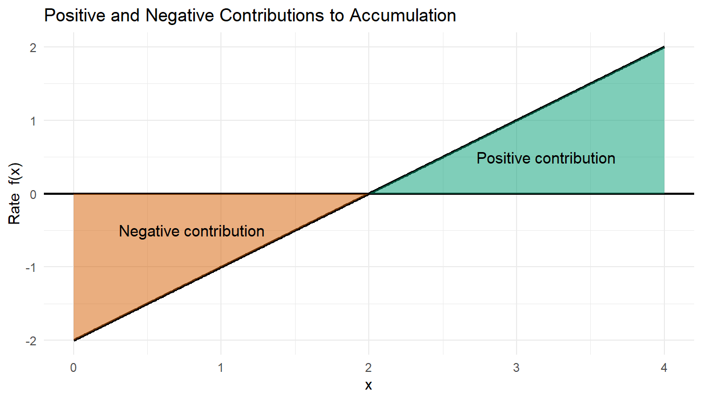
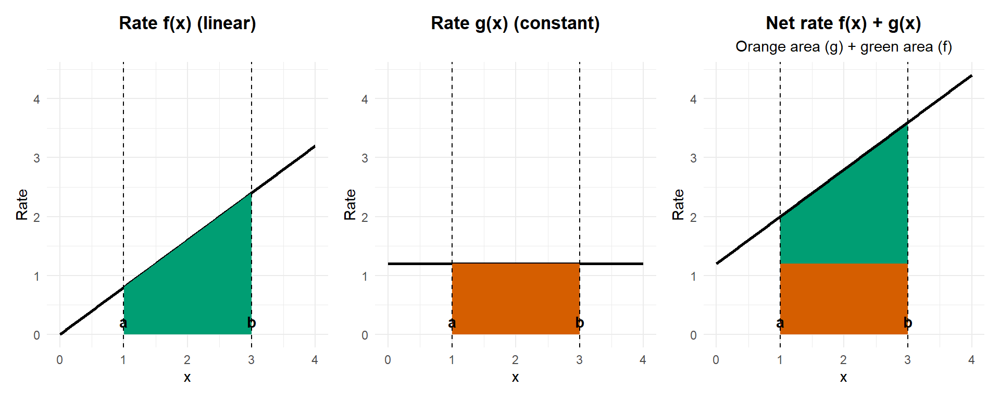
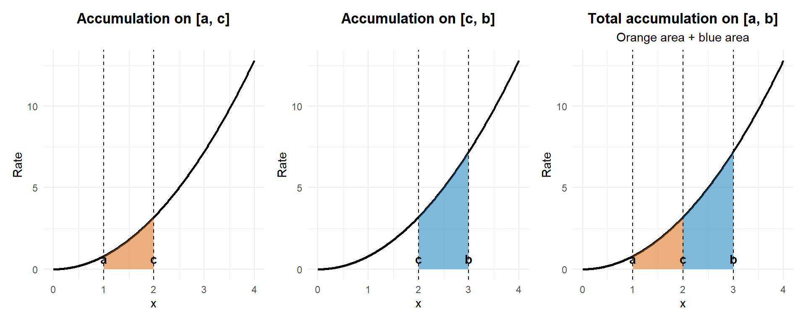
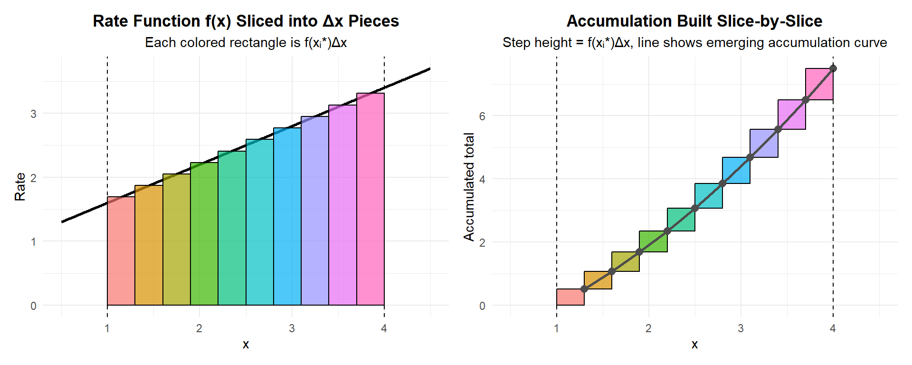
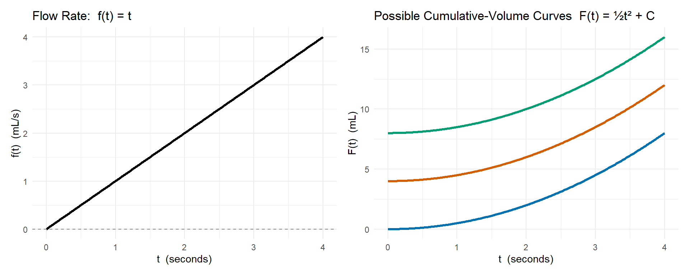
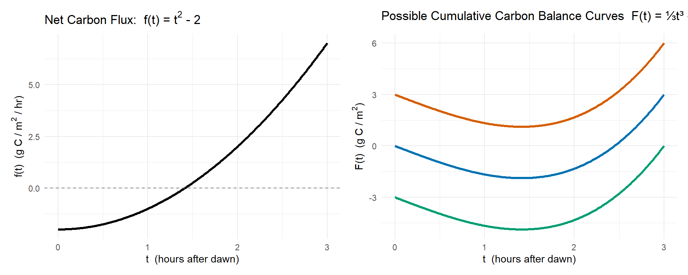
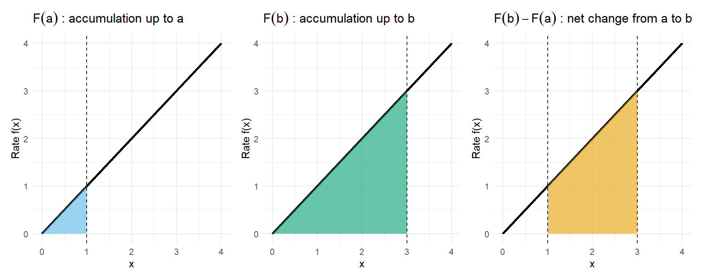

Chapter 4 Definite Integrals and the Fundamental Theorem of Calculus
A flux tower above a Douglas-fir stand logs CO₂ exchange every half hour, day and night. Before dawn the readings are negative: respiration beats photosynthesis and the forest is losing carbon. By mid-morning they’ve flipped, and the canopy is pulling carbon down.
The question someone will eventually ask: did this forest gain or lose carbon today, and how much? To answer it, you need to turn a day of rates, some positive and some negative, into one signed total. That total is a definite integral. This chapter covers what one is, what it means, and how to compute it.
4.1 Purpose of the Chapter
In Chapter 3 you estimated totals from rates by adding up rectangles, and you saw that gains and losses can cancel. This chapter makes that precise.
By the end of it, you should be able to:
- explain what a definite integral is, as the limit of Riemann sums
- interpret one as accumulation, with units and a sign, rather than just an area
- explain how integration and differentiation undo each other (the Fundamental Theorem of Calculus)
- compute definite integrals with antiderivatives, and say what the answer means
Everything else in this course builds on this chapter. Once the definite integral makes sense, the later chapters are mostly about methods.
4.2 From Riemann Sums to Definite Integrals
Left, right, midpoint and trapezoid all give different estimates. This section shows why, as the slices get thinner, they all head toward the same value, and that value is the definite integral.
A Riemann sum is a process. The definite integral is where that process ends up if you could slice infinitely finely.
4.2.1 Riemann Sums as Structured Approximations
A Riemann sum always follows the same steps:
- Divide an interval \([a,b]\) into subintervals.
- Choose a representative rate within each subinterval.
- Multiply rate by width to estimate accumulation over that slice.
- Add the contributions from all slices.
Every choice along the way (how many slices, how wide, where to read the rate) is an assumption about what the system does between measurements. That’s also how field data get turned into totals: measure at set times or places, assume something about the gaps, and add it up.
4.2.2 Partitioning an Interval
The first step is to partition \([a,b]\) into \(n\) subintervals: \[ a = x_0 < x_1 < x_2 < \cdots < x_n = b. \]
If all the subintervals are the same width, each one has width \[ \Delta x = \frac{b - a}{n}. \]
4.2.3 Width \(\Delta x\) and Resolution
Think of \(\Delta x\) as resolution. Over time it’s the gap between measurements, minutes or hours. Over space it’s the distance between sampling sites. In the field, a smaller \(\Delta x\) means a logger that records more often, or more sampling sites.
As \(\Delta x\) shrinks, each rectangle covers less ground, treating the rate as constant across it becomes more reasonable, and the error drops.
4.2.4 Sample Points: Left, Right, and Midpoint
Next, pick where to read the rate in each subinterval. For the \(i\)-th subinterval \([x_{i-1}, x_i]\), the sample point is \(x_i^*\). The usual choices:
- Left endpoint: \(x_i^* = x_{i-1}\)
- Right endpoint: \(x_i^* = x_i\)
- Midpoint: \(x_i^* = \tfrac{x_{i-1} + x_i}{2}\)
Each one is a different assumption about which moment best represents the slice. But they’re all estimates of the same total. They don’t define different integrals.
4.2.5 From Finite Sums to a Limit
A Riemann sum with \(n\) subintervals has the general form: \[ \sum_{i=1}^{n} f(x_i^*)\,\Delta x. \]
That’s a finite number of rectangles, added up. Now increase \(n\). The rectangles get thinner, the gap between left, right and midpoint shrinks, and where you read the rate matters less and less.
As \(\Delta x \to 0\), every reasonable Riemann sum heads to the same value.
4.2.6 Why Different Sums Converge to the Same Value
Most environmental rates are smooth: over a short enough interval, they barely change. So in a very thin slice, the left, right and midpoint values are almost the same, and the rectangles hug the curve whichever you pick. Left sums may start low and right sums high, but as the slices narrow they close in on the same total.
That shared limit is the definite integral.
4.2.7 Defining the Definite Integral
The definite integral of \(f(x)\) from \(a\) to \(b\) is \[ \int_a^b f(x)\,dx = \lim_{n \to \infty} \sum_{i=1}^{n} f(x_i^*)\,\Delta x, \] provided this limit exists.

In words: the integral is what you get by adding up infinitely many infinitely thin slices. It doesn’t depend on where you read the rate in each slice. It’s the total you’d get with perfect resolution.
4.2.8 Reading the Notation
Don’t get hung up on the symbols. The expression \[ \int_a^b f(x)\,dx \] should be read as:
“The total accumulated effect of the rate \(f(x)\) as \(x\) runs from \(a\) to \(b\).”
It’s a precise way to write the accumulation you’ve already been estimating with rectangles.
4.2.9 Environmental Framing: Why Resolution Matters
Field data almost always come in discrete pieces: streamflow every hour, a water sample every week, a satellite pass every few days. The processes themselves are continuous.
A Riemann sum is how you estimate a continuous total from discrete data. The definite integral is what you’d get if you could measure continuously. That’s why more frequent measurements give better totals, why coarse sampling can miss a peak, and why the different methods agree more as resolution improves.
Concept Check: Riemann Sums as a Process
Why are Riemann sums described as a process rather than a final answer?
Click to reveal answer
A Riemann sum is a method: it builds a total from a finite number of rectangles, piece by piece. The definite integral is what that method gives you if you keep slicing finer forever. The sum is the recipe. The integral is the dish.
Concept Check: What Shrinking Δx Really Means
What does shrinking \(\Delta x\) represent conceptually in an environmental context?
Click to reveal answer
Better measurement resolution. Sampling more often in time (every 5 minutes instead of every hour) or more densely in space (every meter instead of every kilometer). Your discrete data get closer to the continuous process.
Concept Check: Why L/R/Mid Converge to the Same Value
Why do left, right, and midpoint Riemann sums converge to the same value for smooth functions?
Click to reveal answer
A smooth rate barely changes over a small enough interval. As \(\Delta x \to 0\), the left, right and midpoint values in each slice become essentially the same number, so all the sums land on the same total.
Concept Check: The Rectangle Assumption
What assumption about the system is made when using rectangles to approximate accumulation?
Click to reveal answer
That the rate is roughly constant across each subinterval. Narrower rectangles make that more believable, which is why more of them gives a better answer.
Concept Check: Formalizing the Riemann Sum
How does a definite integral formalize the idea behind Riemann sums?
Click to reveal answer
It’s defined as the limit of Riemann sums as the slice width goes to zero. That’s the exact total the sums were estimating, and it doesn’t depend on how you partitioned or where you sampled.
Concept Check: Riemann Sums as Environmental Modeling
In what sense is a Riemann sum an environmental modeling tool?
Click to reveal answer
It’s how field data actually get used. Readings at set times (rainfall every 15 minutes, flow every hour) stand in for what happened between them, and you add up the pieces to get a total.
Concept Check: Why Sampling Choice Doesn’t Matter in the Limit
Why does the definite integral not depend on whether you sample with left, right, or midpoint?
Click to reveal answer
As the slices get thinner, every sample point in a slice is reading almost the same rate. Where you sample stops mattering, and all the methods converge.
Concept Check: The Role of the Limit
What conceptual role does the limit play in connecting Riemann sums to integrals?
Click to reveal answer
The limit gets rid of the arbitrary choices: rectangle width, sample point, how you partitioned. What’s left is the one total that every reasonable approximation is closing in on.
4.3 Interpreting the Definite Integral
That’s what a definite integral is. This section is about what it means. Every integral you compute says something about a real system: how much it gained or lost, took in or gave out. To read it properly, you need the sign and the units.
4.3.1 Definite Integrals as Net Accumulation
A definite integral measures net accumulation. If \(f(t)\) is a rate of change, then \[ \int_a^b f(t)\,dt \] is the total effect of that rate as time runs from \(a\) to \(b\).
Net is the important word. Where \(f(t)\) is positive, the quantity goes up. Where it’s negative, the quantity goes down. The integral combines both into one number, which is exactly what you want for systems with competing processes: inflow and outflow, growth and decay, uptake and release.
4.3.2 Signed Area and Physical Meaning
You’ll often hear a definite integral called the area under a curve. Taken literally, that’s misleading.

More accurately, a definite integral is the signed area between the curve and the horizontal axis. Area above the axis counts as positive. Area below counts as negative.
That matches what’s physically happening: a positive rate adds to the quantity, and a negative rate takes away. The sign tells you which way things went.
4.3.3 Total Change from a Rate
Carbon flux (kg C/hr), streamflow (m³/s), pollutant loading (kg/day), energy exchange (W/m²), population growth (individuals/year): these are all rates. The definite integral turns each one into a total change over an interval. Roughly: \[ \text{total change} = \int (\text{rate}) \times (\text{time or space}) \]
It’s the same idea as \[ \text{amount} = \text{rate} \times \text{time}, \] except the rate is allowed to change.
4.3.4 Units Analysis: Why Units Matter
Units are one of the best checks you have. The units of a definite integral are \[ (\text{units of } f) \times (\text{units of the variable}) \]
For example:
- \(\text{kg/hr} \times \text{hr} = \text{kg}\)
- \(\text{m}^3/\text{s} \times \text{s} = \text{m}^3\)
- \(\mu\text{mol}/(\text{m}^2\cdot\text{s}) \times \text{s} = \mu\text{mol}/\text{m}^2\)
If the units don’t match the quantity you’re after, something went wrong in the setup.
4.3.5 Positive and Negative Contributions
Often the rate is positive for part of an interval and negative for the rest: carbon uptake by day and release at night, a lake filling in a wet month and draining in a dry one, a population growing in good seasons and shrinking in bad ones. The definite integral takes care of all of it and reports the combined effect.
4.3.6 Net Accumulation vs. Total Accumulation
Keep these two apart:
- Net accumulation is the signed result of the integral: the overall change.
- Total accumulation adds up the size of every contribution, gains and losses alike. You get it by splitting the interval where the rate changes sign and adding the absolute values, which is the same as integrating \(|f|\).
A net value of zero does not mean nothing happened. It means gains and losses balanced.
4.3.7 Common Pitfalls
Three mistakes come up again and again:
- Reading height as an amount. \(f(x)\) at a point is a rate. It only becomes an amount once you integrate over an interval.
- Ignoring the sign. Counting every area as positive throws away whether the system gained or lost.
- Reading zero as “nothing happened.” A net of zero often hides a lot of activity in both directions.
4.3.8 Environmental Framing
Some places you’ll see this:
- Carbon. Integrate net ecosystem exchange to get a forest’s carbon gain or loss over a day, a season or a year.
- Pollutant loads. Integrate concentration × flow to get the total mass carried into or out of a lake.
- Energy. Integrate heat flux to get the energy gained or lost through a surface.
- Populations. Integrate births minus deaths, plus immigration minus emigration, to get the net change in a population.
In each case the integral tells you how much changed, in which direction, over what interval. Getting the number is half the job. Saying what it means is the other half.
Concept Check: Accumulation vs. Area
Why is a definite integral better interpreted as accumulation rather than area?
Click to reveal answer
A definite integral is the total change built up from a rate, with a sign and units. “Area” is a useful picture, since it’s what you see on the graph. “Accumulation” is what it means physically: kilograms of carbon exchanged, liters of water passed, individuals added.
Concept Check: What the Sign of an Integral Tells You
What does the sign of a definite integral tell you about a system?
Click to reveal answer
The direction of the net change. Positive: the quantity went up overall (water arrived, carbon was fixed). Negative: it went down (water evaporated, carbon was respired). Zero: gains and losses balanced.
Concept Check: Zero Net Doesn’t Mean Nothing Happened
Why does a zero net integral not imply that “nothing happened”?
Click to reveal answer
Zero means the positive and negative contributions canceled. Big gains and losses can still be hiding in there. A forest that fixed 80 kg C during the day and respired 80 kg C overnight has a net flux of zero, but a lot happened.
Concept Check: Units as a Sanity Check
How do units help verify the interpretation of a definite integral?
Click to reveal answer
The units of an integral are the rate’s units times the variable’s units. If they don’t match the quantity you think you’re computing, your setup is wrong. “mg C / m² / hr × hr = mg C / m²” makes sense. “mg C / m² × hr” doesn’t, and that tells you to go back and check.
Concept Check: Why ‘Area Under the Curve’ Falls Short
Why is the phrase “area under the curve” incomplete without the Riemann-sum perspective?
Click to reveal answer
On its own, “area” sounds purely geometric. The Riemann sum shows where the area comes from: adding up rate × width pieces. That’s why the answer has units and a sign, and why it stands for something real.
4.4 How to Evaluate a Definite Integral
A definite integral \[ \int_a^b f(x)\,dx, \] is the net accumulation of \(f(x)\) over \([a,b]\). Evaluating it means computing that number. Computing a limit of Riemann sums every time would be painful. There’s a shortcut. Here are the steps, and the Fundamental Theorem of Calculus later in this chapter explains why they work.
4.4.1 Step 1: Find an antiderivative
Find a function \(F(x)\) whose derivative is \(f(x)\): \[ F'(x) = f(x). \]
\(F\) is called an antiderivative of \(f\).
Examples: - If \(f(x) = x^2\), then \(F(x) = \tfrac{x^3}{3}\) - If \(f(x) = e^x\), then \(F(x) = e^x\) - If \(f(x) = \cos x\), then \(F(x) = \sin x\)
You don’t need a “+ C” here. Step 4 explains why.
4.4.2 Step 2: Evaluate the antiderivative at the bounds
Evaluate \(F\) at the upper and lower limits: \[ F(b) \quad \text{and} \quad F(a). \]
Think of these as the running total at \(x = b\) and at \(x = a\), measured from the same starting point.
4.4.3 Step 3: Subtract to find the net accumulation
The definite integral is the difference: \[ \int_a^b f(x)\,dx = F(b) - F(a). \]
You subtract because a definite integral measures change over an interval, not an amount at one point.
4.4.4 Step 4: Why there is no constant of integration
If you added a constant \(C\) to \(F\), it would show up in both terms: \[ (F(b) + C) - (F(a) + C) = F(b) - F(a). \]
It cancels. That’s why definite integrals don’t need a constant of integration. Indefinite integrals, in Chapter 5, do.
4.4.5 A simple numerical example
Evaluate \[ \int_1^4 x^2\,dx. \]
Antiderivative: \[ F(x) = \tfrac{x^3}{3} \]
Evaluate at the bounds: \[ F(4) = \tfrac{64}{3}, \qquad F(1) = \tfrac{1}{3} \]
Subtract: \[ \int_1^4 x^2\,dx = \tfrac{64}{3} - \tfrac{1}{3} = \tfrac{63}{3} = 21 \]
Every definite integral you evaluate follows the same three moves: find an antiderivative, evaluate at the bounds, subtract. The properties in the next section make that faster.
Concept Check: When Rate × Time Actually Works
Why does integrating a constant rate reduce to “rate × duration”?
Click to reveal answer
With a constant rate, every slice contributes the same amount. Adding them up is just rate × interval length. There’s no variation to keep track of, so the integral collapses to the formula you learned in grade school.
Concept Check: Why the Constant of Integration Doesn’t Matter Here
Why does the constant of integration not affect a definite integral?
Click to reveal answer
A definite integral measures change between two points. In \(F(b) - F(a)\), the same \(C\) appears in both terms and cancels, leaving just the change.
Concept Check: What F(b) − F(a) Really Means
What does \(F(b) - F(a)\) represent conceptually?
Click to reveal answer
The net change between \(a\) and \(b\), not the value at either point. \(F(a)\) is the running total at \(a\), \(F(b)\) is the running total at \(b\), and the difference is what accumulated between them.
Concept Check: Why We Trust Integrals When Data Are Discrete
Why can definite integrals be trusted even when real environmental data come in discrete chunks?
Click to reveal answer
Riemann sums show how discrete measurements approximate a continuous total. The definite integral is the continuous benchmark they’re approaching. So even with data every 15 minutes, you know what you’re estimating and how to make the estimate better.
4.5 Properties of Definite Integrals
Definite integrals follow a handful of rules. None of them are arbitrary: each one is something you’d expect from adding things up. They let you split problems into pieces, combine information you already have, and sometimes skip the formula altogether.
4.5.1 Linearity of the Integral
Linearity means you can integrate a sum one piece at a time, and pull constants outside.
4.5.1.1 Adding Rates
If two rates \(f(x)\) and \(g(x)\) act over the same interval, the total from both is the sum of the totals from each:
\[ \int_a^b [f(x) + g(x)]\,dx = \int_a^b f(x)\,dx + \int_a^b g(x)\,dx. \]

Why it works: adding two rates adds their contributions at every moment. Since an integral is just a big sum of small pieces, it doesn’t matter whether you add the rates first and then integrate, or integrate each and then add.
Example: a lake fed by a stream, \(f(x)\), and steady groundwater seepage, \(g(x)\). The integral of \(f + g\) is the total water in. You can also integrate each source separately to see how much came from where.
The same rule gives you net totals when one rate is negative. Write photosynthesis as a positive rate and respiration as a negative one, and the integral of their sum is net ecosystem exchange.
4.5.1.2 Scaling a Rate
Multiply a rate by a constant \(c\) and the total gets multiplied by \(c\):
\[ \int_a^b c f(x)\,dx = c \int_a^b f(x)\,dx. \]
Why it works: if every small piece is scaled by the same factor, so is the total.
Example: double the pollutant concentration at every moment and you double the total load. Converting mg to g just rescales the integral by 1/1000.
4.5.2 Additivity Over Intervals
You can split an interval. If \(c\) is between \(a\) and \(b\), then
\[ \int_a^b f(x)\,dx = \int_a^c f(x)\,dx + \int_c^b f(x)\,dx. \]

Why it works: the total over a long interval is the sum of the totals over its pieces. You already do this when you add up hourly flow to get a day’s discharge, or storm-by-storm nutrient export to get an annual load.
Example: split a year into wet and dry seasons to see how much of the annual total came from each. The total doesn’t change.
4.5.3 Reversing the Limits of Integration
Swap the limits and the sign flips:
\[ \int_a^b f(x)\,dx = - \int_b^a f(x)\,dx. \]
Why it works: going from \(b\) back to \(a\) runs the accumulation in reverse. Integrate forward in time and you get the net gain or loss. Integrate backward and you get the same size with the opposite sign: the amount that would undo it.
4.5.4 Integrals of Constant Functions
With a constant rate, the integral is the calculation you already know:
\[ \int_a^b c\,dx = c(b - a). \]
That’s rate × duration. It’s also a good sanity check: if a rate is roughly constant, your integral should come out close to rate × duration.
Example: steady baseflow in a stream over a dry week, or a constant heat flux on a still, overcast day.
Concept Check: Why Linearity Matches Physical Intuition
Why is linearity of the integral consistent with physical intuition?
Click to reveal answer
Separate processes add up at every moment. If rain is adding water to a lake at one rate and groundwater at another, the lake gains the sum. Add the rates and you add their totals.
Concept Check: Additivity Over Subintervals
What does the additivity property of integrals say about breaking an interval into pieces?
Click to reveal answer
The total over a long interval is the sum of the totals over its pieces. The volume past a gauge from 9 AM to 5 PM is what passed from 9 to noon plus what passed from noon to 5.
Concept Check: Why Reversing Limits Flips the Sign
Why does reversing the limits of integration change the sign of the integral?
Click to reveal answer
Swapping the limits runs the accumulation backward. Instead of “how much built up going forward?” you’re asking “how much would undo that going back?” Same size, opposite sign.
4.6 The Fundamental Theorem of Calculus (Part I)
4.6.1 The Idea
Part I says something you probably already believe: if you build up a total by adding a rate, then the total changes at that rate. The derivative of an accumulation is the rate being accumulated. It’s the link between the two halves of calculus: rates of change and accumulated change.
4.6.2 Accumulation as a Function
So far an accumulation has been a number: total water, total load, total carbon over a fixed interval. Now let the end of the interval move.
Instead of “how much accumulated between \(a\) and \(b\)?”, ask “how much has accumulated from \(a\) up to time \(x\)?” The answer depends on \(x\), so it’s a function: the accumulation function. For a rate \(f(t)\): \[ A(x) = \int_a^x f(t)\,dt. \]
The start \(a\) is fixed. The end \(x\) moves. \(A(x)\) is the running total at time \(x\).
4.6.3 What the Theorem Says (Conceptually)
Part I says:
If an accumulation function is defined by \[ A(x) = \int_a^x f(t)\,dt, \] then \[ A'(x) = f(x). \]
The rate at which the running total changes is the rate you started with. If water is flowing into a tank at 5 m³/hr right now, and nothing is flowing out, the amount in the tank is going up at 5 m³/hr right now.
4.6.4 Why Differentiation and Integration Are Inverses
This is why derivatives and integrals undo each other. Integration takes a rate and gives you a total: how much has built up? Differentiation takes a total and gives you a rate: how fast is it building up right now?
4.6.5 Visual Intuition

This figure builds an accumulation function from a rate function, one piece at a time.
Left panel: Rate sliced into pieces
- The curve represents a rate function \(f(x)\).
- The interval from \(a\) to \(b\) has been divided into many small widths \(\Delta x\).
- Each colored rectangle represents a single contribution: \[ \text{(rate at that slice)} \times \Delta x = f(x_i^*)\,\Delta x. \]
- The rectangles aren’t the accumulation yet. They’re the pieces that get added up.
Right panel: Accumulation built slice-by-slice
- Here the pieces are added one after another. Each step is one rectangle from the left panel, and its height is that rectangle’s area. The colors match so you can follow each piece across.
- The line through the tops of the steps shows what happens as \(\Delta x\) shrinks: the steps smooth out into a curve.
Connecting the two panels
Define the accumulation function \[ A(x) = \text{area under } f \text{ from } a \text{ to } x. \]
- When \(x\) moves slightly to the right by \(\Delta x\), the added accumulation is approximately: \[ \Delta A \approx f(x)\,\Delta x. \]
- Dividing by \(\Delta x\) gives: \[ \frac{\Delta A}{\Delta x} \approx f(x). \]
- As the slices get thinner, the approximation becomes exact.
So the slope of the accumulation function at \(x\) is the height of the rate function at \(x\). That’s Part I.
In plain language: if you know the rate at every moment, you can build the total. And if you track the total over time, its slope gives you the rate back. Streamflow and accumulated discharge, carbon flux and carbon stored, growth rate and population size: each pair is the same process seen two ways.
Concept Check: The Role of the Accumulation Function A(x)
What conceptual role does the accumulation function \(A(x)\) play?
Click to reveal answer
It’s the running total from a fixed start up to wherever you stop. Instead of one number for the whole interval, \(A(x)\) answers “how much had built up by time \(x\)?” for every \(x\).
Concept Check: Why A’(x) = f(x) Makes Sense
According to the Fundamental Theorem of Calculus (Part I), why is \(A'(x) = f(x)\) reasonable?
Click to reveal answer
Step forward a little, by \(\Delta x\), and the total grows by about \(f(x)\,\Delta x\). Divide by \(\Delta x\): the rate the total is growing equals the original rate.
Concept Check: Differentiation and Integration as Inverses
Why are differentiation and integration considered inverse processes?
Click to reveal answer
Integration builds a total from a rate. Differentiation gets the rate back from the total. Each undoes the other, like multiplying and dividing by the same number.
Concept Check: How the FTC Unifies Calculus
How does the Fundamental Theorem of Calculus unify the main ideas of calculus?
Click to reveal answer
It shows that rates and accumulation are two views of the same process. The derivative looks at one instant. The integral adds the instants back up into a total.
Concept Check: How Riemann Sums Keep the FTC Honest
How does understanding Riemann sums prevent misuse of the Fundamental Theorem of Calculus?
Click to reveal answer
It keeps you clear that a definite integral is an amount, with units and a sign. The FTC is a fast way to compute it, but the thing itself is defined by adding up pieces.
4.7 The Fundamental Theorem of Calculus (Part II)
So far we’ve built the integral from the ground up: small pieces, better and better approximations, a limit. That tells you what an integral means. Part II tells you how to compute one exactly, without adding up infinitely many rectangles. You use an antiderivative:
\[ \int_a^b f(x)\,dx = F(b) - F(a), \]
where \(F'(x) = f(x)\).
You already used this formula earlier in the chapter. Here’s why it works.
4.7.1 Step 1: Accumulation Is a Function
Fix a starting point \(a\), and define a function:
\[ A(x) = \int_a^x f(t)\,dt. \]
This is the running total of the rate \(f\) from \(a\) up to \(x\). From Part I:
\[ A'(x) = f(x). \]
So \(A(x)\) is an antiderivative of \(f(x)\).
4.7.2 Step 2: Antiderivatives Are Not Unique
A function has only one derivative. But it has infinitely many antiderivatives. Let’s see why, graphically.
In each pair of figures below, the left panel is a rate and the right panel shows several antiderivatives of it. Read them both ways: the curves on the right are antiderivatives of the curve on the left, and the curve on the left is the derivative of every curve on the right.
Example 1: A Steadily Rising Flow, \(f(t) = t\)
You slowly open a tap over a beaker, so the flow rate rises steadily: \[ f(t) = t \quad \text{(mL/s)}, \] with \(t\) in seconds. The volume in the beaker at time \(t\) is an antiderivative of this rate: \[ F(t) = \tfrac{1}{2}t^2 + C, \] where \(C\) is the water already in the beaker when you started timing. Different starting amounts give different values of \(C\), but the shape of the curve is the same.

In this example:
The three volume curves on the right sit at different heights but have the same shape. At any time \(t\), each one has slope \(t\) mL/s, which is the height of the rate curve on the left.
Accumulate the line \(f(t) = t\) and you get a parabola. Differentiate any of the parabolas and you get the line back. The constant \(C\) only changes where the volume started, not how fast it’s rising.
Example 2: A Carbon Flux That Switches Sign, \(f(t) = t^2 - 2\)
A flux tower over a young forest stand records net carbon exchange in the first few hours after dawn: \[ f(t) = t^2 - 2 \quad \text{(g C / m}^2\text{/hr)}, \] where \(t\) is hours after dawn. (The numbers are rounded for easy arithmetic and run a bit higher than a real forest.) For \(t < \sqrt{2} \approx 1.41\) hours the rate is negative: respiration beats photosynthesis and the stand is losing carbon. After that, photosynthesis wins and the stand gains carbon. The cumulative carbon balance is an antiderivative: \[ F(t) = \tfrac{1}{3}t^3 - 2t + C, \] where \(C\) is the cumulative balance at the moment we started recording.

In this example:
The flux on the left is negative early (the stand is a carbon source) and positive later (a sink). Each balance curve on the right dips while carbon is being lost and recovers after \(t = \sqrt{2}\). Changing \(C\) shifts the curve up or down, but all three have the same slope at every \(t\), equal to \(f(t)\), and the same minimum at \(t = \sqrt{2}\), where the flux changes sign. The starting balance is the only thing that differs. Everything else comes from the rate.
The Two-Way Relationship
Differentiation goes from accumulation to rate. Integration goes from rate to accumulation. The left panels answer how fast is it changing right now? The right panels answer how much has it changed overall?
4.7.3 Step 3: Why the Constant Does Not Matter for Definite Integrals
The definite integral \(\int_a^b f(x)\,dx\) asks how much accumulated between \(a\) and \(b\). With the accumulation function, that’s \[ \int_a^b f(x)\,dx = A(b) - A(a). \]
Any other antiderivative is \(F(x) = A(x) + C\), so \[ F(b) - F(a) = [A(b) + C] - [A(a) + C]. \]
The constant cancels: \[ F(b) - F(a) = A(b) - A(a). \]
Any antiderivative gives the same answer, however far it’s shifted.
4.7.4 Step 4: What the Formula Is Really Saying
Put together: the accumulation function is an antiderivative (Part I), so the change in any antiderivative between \(a\) and \(b\) is the accumulation between them. That’s why \[ \int_a^b f(x)\,dx = F(b) - F(a) \] works. It isn’t a trick. It follows from integration and differentiation undoing each other.
4.7.5 What the Formula Means
Read \(F(b) - F(a)\) as:
- \(F(a)\): the running total at the start
- \(F(b)\): the running total at the end
- the difference: how much was added (or removed) between \(a\) and \(b\)
In the figure below, \(f(x) = x\) and \(F(x) = \tfrac{1}{2}x^2\), so \(F\) is the area under \(f\) starting from \(x = 0\).

4.7.6 Using the Theorem
You already know the steps from earlier in the chapter: find an antiderivative, evaluate at the bounds, subtract. Finding the antiderivative is Calculus I run backwards. For example, \(x^2 \to \tfrac{x^3}{3}\), \(\sin x \to -\cos x\), and \(e^x \to e^x\).
Then read the answer. It’s always a net accumulation: positive means a net gain, negative a net loss, zero means they balanced. The units are (rate units) × (input units). If \(f(t)\) is a carbon flux in kg/hr, then \(\int_a^b f(t)\,dt\) is the net kilograms of carbon gained or lost between \(a\) and \(b\).
Worked Example: Applying the Fundamental Theorem of Calculus
Suppose the rate at which an ecosystem takes up carbon from the atmosphere is \[ f(t) = 3t^2 \] measured in kg of carbon per hour, where \(t\) is time in hours.
Find the net carbon taken up between \(t = 1\) and \(t = 4\) hours.
1. Identifying Antiderivatives
Find an antiderivative \(F(t)\) with \[ F'(t) = f(t). \]
Since: \[ f(t) = 3t^2, \] an antiderivative is: \[ F(t) = t^3, \] because: \[ \frac{d}{dt}(t^3) = 3t^2. \]
4.7.7 More Than Plug-and-Chug
It’s tempting to treat \(F(b) - F(a)\) as a recipe and stop thinking. That’s how people lose track of units, misread a negative answer, or forget what was accumulating in the first place. The antiderivative is how you compute a definite integral. It isn’t what the integral is. The integral is still the total of a rate, with units and a sign.
Concept Check: Why Antiderivatives Form Families
Why do antiderivatives differ by a constant?
Click to reveal answer
Adding a constant slides a function up or down without changing its slope. The derivative only cares about slope, so all the shifted copies have the same derivative, and they’re all antiderivatives of the same rate.
Concept Check: Why ‘Plug-and-Chug’ Is Dangerous
Why is treating the Fundamental Theorem of Calculus as “plug-and-chug” dangerous?
Click to reveal answer
Without the meaning, it’s easy to misread the sign, the units or what the number is. A negative integral isn’t a mistake. It tells you something. If you can’t see what’s accumulating, you’ll misread the answer.
Concept Check: Riemann Sums and FTC: Same Idea, Two Stages
Why is it misleading to think of Riemann sums and definite integrals as separate formulas?
Click to reveal answer
They’re the same idea at different stages. The Riemann sum shows how the total is built. The definite integral is the limit it builds toward. Treat them as separate and you miss that the FTC is just a fast way to get that limit.
Concept Check: Perfect Measurement and the Integral
How does refining a Riemann sum connect to the idea of “perfect measurement”?
Click to reveal answer
Refining the sum is like measuring more and more often. The definite integral is the total with nothing missed: what your gauge would report if it sampled continuously.
Concept Check: Why Teach Riemann Sums First
What is gained conceptually by teaching Riemann sums before antiderivatives?
Click to reveal answer
You learn what an integral is before you learn the shortcut. Antiderivatives then show up as a way to compute it, not as what it means. That stops the integral turning into “whatever \(F(b) - F(a)\) spits out.”
4.8 Practice Problems
These are calculation problems: linearity, additivity and the FTC. Set them up carefully.
Tips
- Split sums and pull out constants first. It makes the antiderivative and the arithmetic easier.
- Be careful with the bounds. Most mistakes happen in \(F(b) - F(a)\), especially with negatives, not in finding \(F\).
- If you’re given integrals over pieces, add the pieces. Don’t try to invent a function.
- For applied problems, check the units and ask if the answer makes sense.
Simplify before you plug in numbers, and check each answer as you go so a sign error doesn’t follow you to the next problem.
Problem 1
Evaluate the definite integral: \[ \int_0^2 \left(3x^2 + 4x\right)\,dx \] using linearity.
Click to reveal solution
Split using linearity: \[ \int_0^2 3x^2\,dx + \int_0^2 4x\,dx. \]
Compute: \[ \int_0^2 3x^2\,dx = [x^3]_0^2 = 8, \quad \int_0^2 4x\,dx = [2x^2]_0^2 = 8. \]
Add: \[ 8 + 8 = 16. \]
\[ \boxed{16} \]Problem 2
Evaluate: \[ \int_1^3 5e^x\,dx. \]
Click to reveal solution
Factor out the constant: \[ 5\int_1^3 e^x\,dx. \]
Antiderivative: \[ \int e^x\,dx = e^x. \]
Evaluate: \[ 5(e^3 - e). \]
\[ \boxed{5(e^3 - e)} \]Problem 3
Evaluate: \[ \int_{-1}^1 (2x - 3)\,dx. \]
Click to reveal solution
Antiderivative: \[ x^2 - 3x. \]
Evaluate: \[ [x^2 - 3x]_{-1}^1 = (1 - 3) - (1 + 3) = -6. \]
\[ \boxed{-6} \]Problem 4
Evaluate: \[ \int_0^1 (6x^3 - 4x + 2)\,dx. \]
Click to reveal solution
Apply linearity: \[ \int_0^1 6x^3\,dx - \int_0^1 4x\,dx + \int_0^1 2\,dx. \]
Compute: \[ \frac{3}{2} - 2 + 2 = \frac{3}{2}. \]
\[ \boxed{\tfrac{3}{2}} \]Problem 5
Suppose \[ \int_0^4 f(x)\,dx = 7 \quad \text{and} \quad \int_4^9 f(x)\,dx = -5. \]
Find: \[ \int_0^9 f(x)\,dx. \]
Click to reveal solution
By additivity: \[ 7 + (-5) = 2. \]
\[ \boxed{2} \]Problem 6
Evaluate: \[ \int_{-2}^2 3x^2\,dx. \]
Click to reveal solution
Antiderivative: \[ x^3. \]
Evaluate: \[ [x^3]_{-2}^2 = 8 - (-8) = 16. \]
\[ \boxed{16} \]Problem 7
Evaluate: \[ \int_0^{\pi} (4\sin x + 2)\,dx. \]
Click to reveal solution
Split: \[ 4\int_0^{\pi} \sin x\,dx + \int_0^{\pi} 2\,dx. \]
Compute: \[ 4(2) + 2\pi = 8 + 2\pi. \]
\[ \boxed{8 + 2\pi} \]Problem 8
Evaluate: \[ \int_1^2 (3x^2 - e^x)\,dx. \]
Click to reveal solution
Antiderivative: \[ x^3 - e^x. \]
Evaluate: \[ (8 - e^2) - (1 - e) = 7 + e - e^2. \]
\[ \boxed{7 + e - e^2} \]Problem 9
Evaluate: \[ \int_{-1}^{3} (2x - 1)\,dx \] by splitting the interval at \(x = 0\).
Click to reveal solution
Split: \[ \int_{-1}^{0} (2x - 1)\,dx + \int_0^{3} (2x - 1)\,dx. \]
Antiderivative: \[ x^2 - x. \]
Compute: \[ (-2) + 6 = 4. \]
\[ \boxed{4} \]Problem 10
Evaluate: \[ \int_0^2 (5 - 3x)\,dx. \]
Click to reveal solution
Antiderivative: \[ 5x - \tfrac{3}{2}x^2. \]
Evaluate: \[ (10 - 6) - 0 = 4. \]
\[ \boxed{4} \]Problem 11
Suppose \[ \int_0^4 f(x)\,dx = 10 \quad \text{and} \quad \int_4^7 f(x)\,dx = -3. \]
Find
\[
\int_0^7 f(x)\,dx
\]
and interpret the result.
Click to reveal solution
By additivity, \[ \int_0^7 f(x)\,dx = 10 + (-3) = 7. \] There was a net gain of 7 units over the whole interval, even though the quantity was falling for part of it (from 4 to 7).Problem 12
The rate at which nutrients enter a wetland is modeled by \[ f(t) = 4t \] measured in kg/day, where \(t\) is time in days.
Find the net nutrient input between \(t = 2\) days and \(t = 5\) days.
Click to reveal solution
Step 1: Identify an antiderivative
\[ F(t) = 2t^2 \]
Step 2: Evaluate at the bounds
\[ F(5) = 2(25) = 50 \] \[ F(2) = 2(4) = 8 \]
Step 3: Subtract
\[ F(5) - F(2) = 50 - 8 = 42 \]
Interpretation:The wetland received a net input of 42 kg of nutrients over this time interval.
Problem 13
The rate at which carbon is released from soil is given by \[ f(t) = 6e^t \] measured in kg/hr, where \(t\) is time in hours.
Find the net carbon released between \(t = 0\) and \(t = 2\).
Click to reveal solution
Step 1: Identify an antiderivative
\[ F(t) = 6e^t \]
Step 2: Evaluate at the bounds
\[ F(2) = 6e^2 \] \[ F(0) = 6e^0 = 6 \]
Step 3: Subtract
\[ 6e^2 - 6 \]
Interpretation:This represents the net carbon released over the two-hour period, measured in kilograms.
Problem 14
The rate of change of water stored in a soil plot (rain in, minus plant uptake) is modeled by \[ f(t) = t^2 - 4 \] measured in liters/day, where \(t\) is time in days.
Find the net change in stored water from \(t = 1\) to \(t = 4\).
Click to reveal solution
Step 1: Identify an antiderivative
\[ F(t) = \tfrac{1}{3}t^3 - 4t \]
Step 2: Evaluate at the bounds
\[ F(4) = \tfrac{64}{3} - 16 = \tfrac{16}{3} \] \[ F(1) = \tfrac{1}{3} - 4 = -\tfrac{11}{3} \]
Step 3: Subtract
\[ F(4) - F(1) = \tfrac{16}{3} - \left(-\tfrac{11}{3}\right) = 9 \]
Interpretation:The plot gained 9 liters on net. It was losing water until day 2 (where \(f(t) < 0\)) and gaining after.
Problem 15
The rate at which energy is transferred across a surface is \[ f(t) = 5\sin t \] measured in J/s, where \(t\) is time in seconds.
Find the net energy transferred from \(t = 0\) to \(t = \pi\).
Click to reveal solution
Step 1: Identify an antiderivative
\[ F(t) = -5\cos t \]
Step 2: Evaluate at the bounds
\[ F(\pi) = -5(-1) = 5 \] \[ F(0) = -5(1) = -5 \]
Step 3: Subtract
\[ 5 - (-5) = 10 \]
Interpretation:A net 10 joules were transferred. The rate is never negative on \([0, \pi]\), so the net and total are the same here.
Problem 16
The rate of population change for a species is modeled by \[ f(t) = 12 - 3t \] measured in individuals/year, where \(t\) is time in years.
Find the net population change between \(t = 1\) and \(t = 4\).
Click to reveal solution
Step 1: Identify an antiderivative
\[ F(t) = 12t - \tfrac{3}{2}t^2 \]
Step 2: Evaluate at the bounds
\[ F(4) = 48 - 24 = 24 \] \[ F(1) = 12 - 1.5 = 10.5 \]
Step 3: Subtract
\[ 24 - 10.5 = 13.5 \]
Interpretation:The population increased by 13.5 individuals. In reality that’s 13 or 14 animals. The model is continuous, so the answer doesn’t have to be a whole number.
Problem 17: Total Streamflow Volume
A flow sensor on a roof downspout records \[ Q(t) = 3t^2 \quad \text{(L/min)}, \] where \(t\) is minutes after the sensor started recording. Use the Fundamental Theorem of Calculus to find the total volume of water that ran through the downspout between \(t = 1\) and \(t = 4\) minutes.
Click to reveal solution
The total volume is \[ \int_1^4 3t^2\,dt. \]
An antiderivative of \(3t^2\) is \(t^3\), so \[ \int_1^4 3t^2\,dt = \bigl[t^3\bigr]_1^4 = 64 - 1 = 63 \text{ L}. \]
\[ \boxed{63 \text{ L of water ran through the downspout.}} \]
Problem 18: Net Carbon Exchange Over a Morning
A flux tower over a young Douglas-fir stand records the net carbon exchange rate during the first three hours after dawn as \[ f(t) = t^2 - 1 \quad \text{(g C / m}^2\text{ / hr)}, \] with \(t\) measured in hours after dawn. Compute the net carbon exchange between \(t = 0\) and \(t = 3\) hours, and interpret the sign.
Click to reveal solution
Net carbon exchange: \[ \int_0^3 \bigl(t^2 - 1\bigr)\,dt = \left[\tfrac{t^3}{3} - t\right]_0^3 = \left(9 - 3\right) - 0 = 6 \text{ g C / m}^2. \]
Interpretation: The answer is positive, so the stand was a net carbon sink over the three hours. The rate was negative (a source) for the first hour and positive (a sink) after that. The uptake after hour 1 more than made up for the early loss.
\[ \boxed{+6 \text{ g C / m}^2\text{ (net uptake)}.} \]
Problem 19: Pollutant Mass Loading to a Lake
A regulator monitors the rate at which a contaminant enters a lake from a stormwater outfall in the first minute of a storm: \[ L(t) = 4t \quad \text{(mg / s)}, \] with \(t\) measured in seconds since the start of monitoring. Find the total mass of contaminant delivered to the lake between \(t = 0\) and \(t = 60\) seconds.
Click to reveal solution
Total mass: \[ \int_0^{60} 4t \,dt = \bigl[2t^2\bigr]_0^{60} = 2(3600) - 0 = 7200 \text{ mg} = 7.2 \text{ g}. \]
\[ \boxed{7.2 \text{ grams of contaminant entered the lake.}} \]
This is the kind of calculation a regulator uses to turn a sensor record into one number to compare against a load limit.
Problem 20: Net Population Change with a Rate That Rises and Falls
A fisheries biologist models the net daily change in a juvenile salmon population (immigration minus mortality) over a six-day window as \[ N'(t) = 6t - t^2 \quad \text{(fish/day)}, \] where \(t\) is days from the start of monitoring. Compute the net change in population between \(t = 0\) and \(t = 6\) days, and describe what the rate function says happens within that window.
Click to reveal solution
Net change: \[ \int_0^6 \bigl(6t - t^2\bigr)\,dt = \left[3t^2 - \tfrac{t^3}{3}\right]_0^6 = \left(108 - 72\right) - 0 = 36 \text{ fish}. \]
What the rate says: \(N'(t) = 6t - t^2 = t(6 - t)\) is zero at \(t = 0\) and \(t = 6\), and positive in between. So the population grows the whole time, but the rate of growth peaks at \(t = 3\) (9 fish/day) and falls back to zero by day 6. The net gain is 36 fish.
\[ \boxed{+36 \text{ fish (net gain over the six-day window)}.} \]